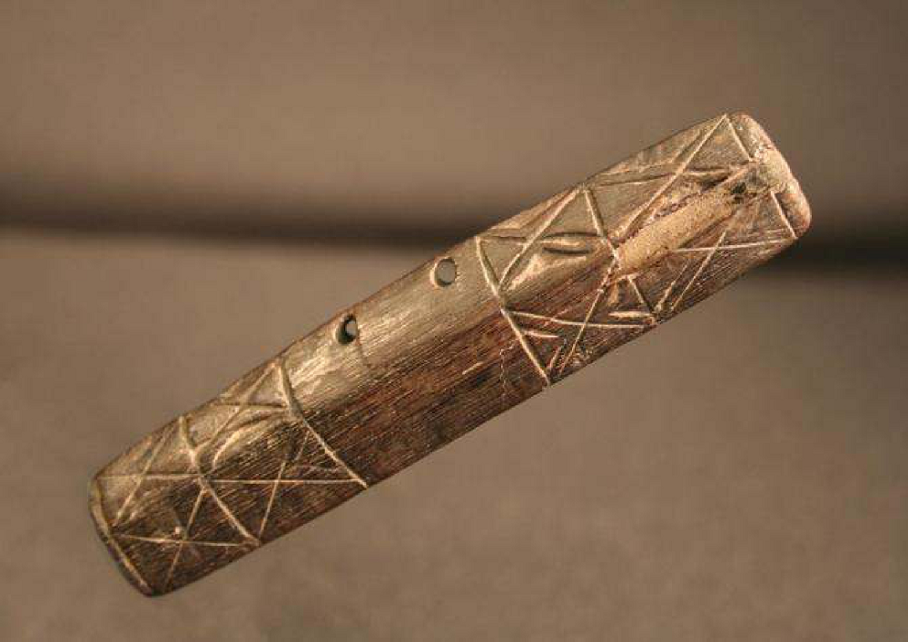

Los silbatos de los Ava
Nota 028
Inicio > Blog Bitácora de un músico > Nota 028
Los Ava, un pueblo de habla guaraní de las tierras bajas de Bolivia y Argentina, preservaron una compleja tradición musical modelada por influencias amazónicas, arawak, andinas y coloniales, pese a siglos de guerras, desplazamientos e intervención misionera. Estrechamente vinculada a rituales como el aréte guásu, su herencia musical incluye tambores, flautas, trompetas, silbatos, idiófonos y el singular violín turumi, generalmente elaborados artesanalmente por los propios intérpretes e insertos en prácticas ceremoniales, sociales y simbólicas que articulan música, danza, memoria, sexualidad, guerra y relaciones entre vivos y muertos.
Los Ava utilizaban al menos dos silbatos, que hoy parecen estar en desuso. Quizás el más conocido (y el más debatido) era el serére, senéne o jocüro. Básicamente, consistía en una tira de madera con un único conducto perforado a lo largo, abierto por ambos extremos. Al soplar por el extremo proximal, como si fuera una flauta de Pan, y tapar y descubrir el extremo distal con un dedo, se producían dos notas.
Numerosos autores describen el aerófono como un silbato largo y angular hecho de la madera dura del igüirayepiro o algarrobilla y adornado con figuras y símbolos tallados, que los hombres tocaban tanto en celebraciones como en batallas. Las técnicas de construcción, el tipo de madera utilizada, la ornamentación y la forma de tocar el instrumento Ava son similares a las del jant'arki, un silbato del pueblo Calcha, vecino de la sierra boliviana.
El otro silbato, llamado yvýra mímby, era, como su nombre indica, una flauta de madera: circular, plana, hecha de madera de igüirayepíro, con tres agujeros, profusamente decorada y tocada únicamente por hombres. Algunos autores lo han denominado naseré. Se tocaban tanto en festivales como en la guerra; durante los conflictos armados, además de estos silbatos, también se tocaban trompetas y cuernos.
Más información sobre estos artefactos sonoros puede encontrarse en el libro digital de acceso libre Instrumentos musicales de los Ava, accesible a través de la sección "Libros digitales sobre música. Serie 1".